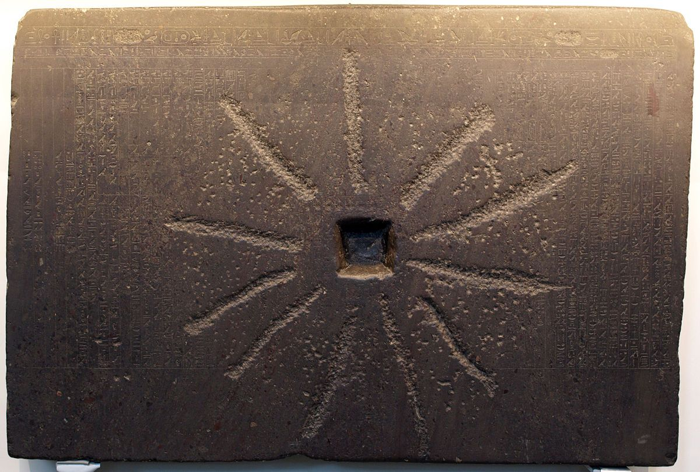
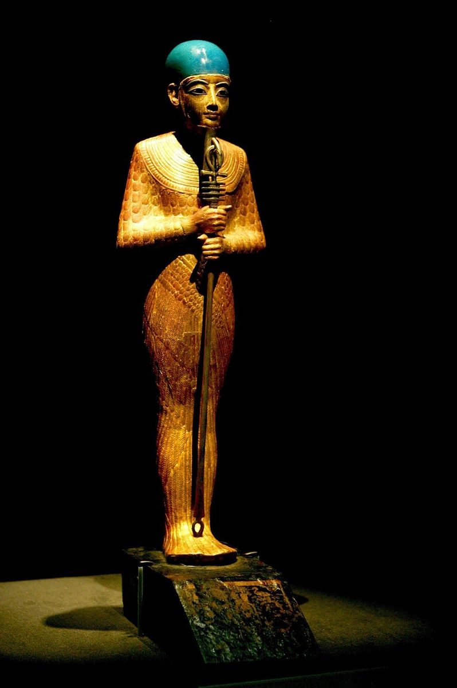

La historia del mito de Menfis es única y apasionante. En 1805, el Museo Británico incorporó a su colección egipcia una piedra rectangular, dañada porque había servido de muela de molino en manos de un campesino egipcio. Contiene 63 columnas de textos finamente grabados. Pero en aquella época nadie sabía leer jeroglíficos. Sin embargo, esta piedra contiene un texto religioso de una importancia excepcional. Se trata de la teología menfita, que narra la creación del mundo según la cosmogonía de Menfis, la antigua capital al sur de la actual El Cairo. El monumento data de la XXV dinastía y, más precisamente, del reinado de Shabaka. Como en otros mitos, la Palabra ocupa el centro de todo, pero aquí la palabra materializa lo que expresa.
El demiurgo de Menfis no es ni Atum ni Thot, sino Ptah ("escultor de la tierra", el que abre). Ptah concibe el mundo mediante el pensamiento de su corazón y le da vida mediante la magia de su Palabra. Algunos documentos también explican que Ptah concibe mediante el Pensamiento (representado por Horus) y crea mediante la Palabra (representada por Thot).

En esta teología, cada elemento del mundo existe primero como un pensamiento en el corazón de Ptah antes de adoptar una forma real una vez pronunciado en voz alta. Este poder de la Palabra creadora, capaz de hacer existir al instante todo lo que nombra, sitúa a Ptah por encima incluso de los demás demiurgos: no necesita separar el cielo de la tierra ni modelar la materia con las manos; le basta con concebir y luego hablar. Tras crear a los demás dioses, Atum incluido, Ptah pasó a modelar ciudades y templos y a establecer los primeros ritos funerarios.
Sede del poder real desde la primera dinastía, Menfis tuvo que construir una teología capaz de rivalizar con la más antigua de Heliópolis. Al situar a Ptah en la cúspide de la creación, sus sacerdotes convirtieron su ciudad en el escenario original del mundo. El culto a Ptah iba de la mano del toro Apis, considerado su encarnación viviente en la tierra, y Ptah acabó fusionándose con Sokar y Osiris en la forma compuesta Ptah-Sokar-Osiris, una divinidad funeraria venerada en todo Egipto hasta la época tardía.